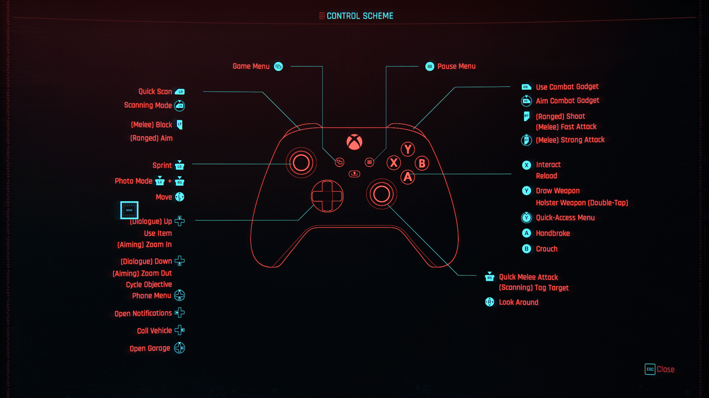

Game Overview
cyberpunk 2077 Cyberpunk 2077 & Phantom Liberty Review: Is It Worth Your Time and Money?
Introduction
When Cyberpunk 2077 launched in December 2020, it was met with a mix of excitement and disappointment. The game promised an immersive open-world RPG set in the dystopian future of Night City, but it was plagued by bugs, performance issues, and missing features. Fast forward to 2023, with the release of Phantom Liberty and the game-changing Update 2.0, Cyberpunk 2077 has undergone a complete transformation.
Is it finally the game we were promised? More importantly, is Phantom Liberty worth buying? Let's dive into the details.
Cyberpunk 2077 Base Game Review
Story & Worldbuilding – A Narrative Masterpiece
At its core, Cyberpunk 2077 tells the story of V, a mercenary implanted with the digital ghost of legendary rockerboy Johnny Silverhand (voiced by Keanu Reeves). The plot is a mix of corporate espionage, crime syndicates, and existential dilemmas, offering a variety of choices that shape the story’s outcome.
-
Strengths:
- ✅ Deep, branching story with multiple endings
- ✅ Well-developed characters, especially Johnny Silverhand
- ✅ A visually stunning and immersive open world in Night City
-
Weaknesses:
- ❌ Some side quests can feel disconnected from the main narrative
Gameplay – Improved, but Not Perfect At launch, the gameplay felt unfinished, but Update 2.0 has significantly overhauled the experience: Combat feels smoother, with new perks and improved enemy AI. Hacking and stealth are now viable playstyles, making Netrunners more powerful. Vehicles now have combat capabilities, making car chases actually fun. Police AI has been revamped, meaning you can no longer just escape by driving a block away. However, while these improvements make the game much better, some mechanics still lack depth, such as melee combat and the life path choices (which still don’t impact gameplay significantly). Graphics & Performance – Then vs. Now Originally, Cyberpunk 2077 was infamous for being unplayable on last-gen consoles, but after multiple patches: On PC & Next-Gen (PS5, Xbox Series X): The game is stunning, with ray tracing and improved performance. On PS4 & Xbox One: The game is technically "playable" but still not recommended due to poor frame rates. The game now runs smoothly on modern hardware, making it a solid experience for those who skipped the launch disaster.
Phantom Liberty Expansion Review What’s New in Phantom Liberty? Phantom Liberty is a spy-thriller expansion that introduces a brand-new district (Dogtown) and an entirely new storyline featuring Idris Elba as Solomon Reed, a veteran secret agent. Unlike the base game, this expansion leans more into espionage, deception, and high-stakes action.
-
Key Features:
- ✔️ A thrilling new story with intense twists and multiple endings
- ✔️ Dogtown – a new explorable area with exclusive missions, black markets, and dangerous factions
- ✔️ New weapons, cyberware, and vehicles
- ✔️ Overhauled Relic skill tree, adding unique cyberware abilities
- ✔️ More replay value with new choices and consequences
If you enjoyed Cyberpunk 2077, Phantom Liberty makes it feel like a whole new game.
-
Should You Buy Cyberpunk 2077 & Phantom Liberty?
Who Should Buy It?
- ✅ If you love RPGs with deep storytelling and player choices
- ✅ If you enjoy open-world exploration with cyberpunk aesthetics
- ✅ If you want a huge, immersive game with hours of content
- ✅ If you have a PC or next-gen console (PS5/Xbox Series X)
-
Who Should Avoid It?
- ❌ If you expect GTA-style emergent gameplay (Night City is immersive but lacks dynamic NPC interactions)
- ❌ If you only have a PS4 or Xbox One performance is still not great
- ❌ If you dislike long, narrative-heavy games
-
Final Verdict Is It Worth It?
- ✔️ Cyberpunk 2077 (After Update 2.0) → 8.5/10
- ✔️ Phantom Liberty → 9/10
Final Conclusion: If you skipped Cyberpunk 2077 at launch, now is the perfect time to jump in. The 2.0 Update + Phantom Liberty turns it into one of the best RPG experiences available. While it still has minor flaws, the improved mechanics, gripping story, and next-gen polish make it a must-play for RPG and sci-fi fans. 👉 Verdict: A definite buy for next-gen and PC gamers. 🎮🔥
Control Scheme
PlayStation 5

Xbox
Performance
The game requires high-end hardware for optimal performance. On PC, an Intel i7 and NVIDIA RTX 2070 or higher are recommended for smooth gameplay at ultra settings.
Cyberpunk 2077 Performance Review
Details on Cyberpunk 2077 performance across different PC tiers.